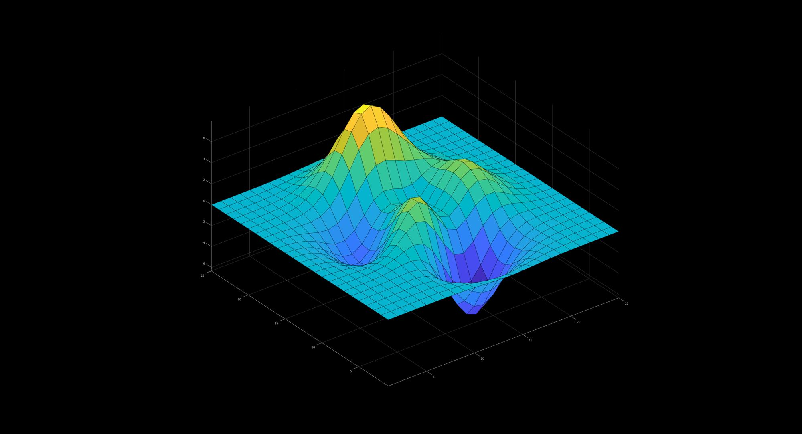
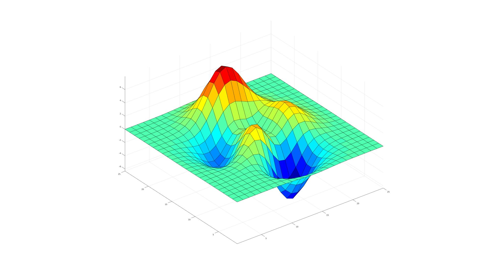
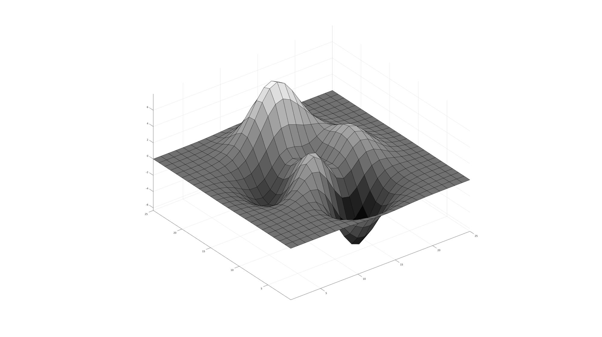
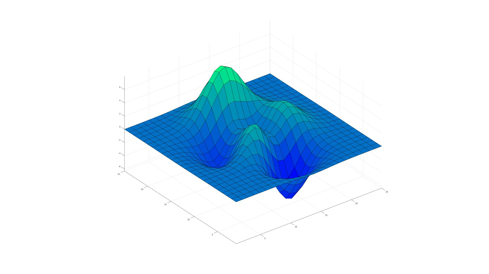
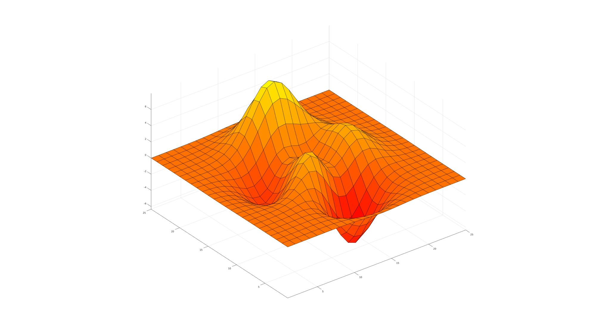
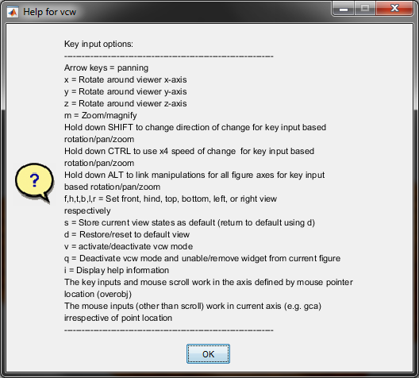

cFigure
Below is a demonstration of the features of the cFigure function
Contents
Syntax
[h]=cFigure(figStruct);
Description
Creates a custom figure using the input structure figStruct. The cFigure function provides easy control of background color, the color definitions, the figure window size (e.g. near maximal), and enables figure property cloning. It also allows users to create hidden figures which can be made visible for instance using the mfv command.
Examples
clear; close all; clc;
Plot settings
fontSize=15; faceAlpha=0.75; edgeColor=0.3*ones(1,3); edgeWidth=1.5;
Basic use of cFigure and specification of custom figure properties
%Modifying standard figure properties figStruct.Name='GIBBON'; %Figure name figStruct.Color='k'; %Figure background color %Custom figure properties figStruct.ColorDef='black'; %Setting colordefinitions to black figStruct.ScreenOffset=0; %Setting spacing of figure with respect to screen edges [H(1)]=cFigure(figStruct); %Plot something surf(peaks(25)); axis equal; axis tight;

Creating hidden figures which are made visible using mfv
The below example demonstrates how to create 1 or more figures that remain hidden until the mfv command is used. This way the figures do not "steal focus". This can be an issue sometimes when multiple figures are used over time (and with some operational systems).
%Create property structure figStructHid.Visible='off'; %Open a hidden figure [H(1)]=cFigure(figStructHid); %Plot something in it hs=surf(peaks(25)); axis equal; axis tight; colormap jet; drawnow; %Open another hidden figure [H(2)]=cFigure(figStructHid); %Plot something in it hs=surf(peaks(25)); axis equal; axis tight; colormap gray; drawnow; pause(2); %Add pause to demonstrate lack of visible figures
At this point all figures are hidden so have not stolen focus. The figures can be made visible using the mfv command:
mfv(H); %Now make all in H visible
  Calling hidden figures using scf
%Create property structure figStructHid.Visible='off'; figStruct.ScreenOffset=300; %Open a hidden figure without plotting anything in it [H(1)]=cFigure(figStructHid); %Open another hidden figure [H(2)]=cFigure(figStructHid); %Plot something in it hs=surf(peaks(25)); axis equal; axis tight; colormap autumn; drawnow; %Calling first figure again without making it visible scf(H(1)); %Now plot something in it hs=surf(peaks(25)); axis equal; axis tight; colormap winter; drawnow; %Now show the figures mfv; %If this is used instead of mfv(H) then all hidden figures are shown 
Using the preloaded view control widget vcw
See also: vcw;
Location of the View Control Widget (vcw) activation button in the menubar:

Press v key to activate widget, press i to show help information

Using the preloaded Export Figure Widget efw
See also: efw;
Location of the Export Figure Widget (efw) button in the menubar:


GIBBON www.gibboncode.org
Kevin Mattheus Moerman, gibbon.toolbox@gmail.com
GIBBON footer text
License: https://github.com/gibbonCode/GIBBON/blob/master/LICENSE
GIBBON: The Geometry and Image-based Bioengineering add-On. A toolbox for image segmentation, image-based modeling, meshing, and finite element analysis.
Copyright (C) 2019 Kevin Mattheus Moerman
This program is free software: you can redistribute it and/or modify it under the terms of the GNU General Public License as published by the Free Software Foundation, either version 3 of the License, or (at your option) any later version.
This program is distributed in the hope that it will be useful, but WITHOUT ANY WARRANTY; without even the implied warranty of MERCHANTABILITY or FITNESS FOR A PARTICULAR PURPOSE. See the GNU General Public License for more details.
You should have received a copy of the GNU General Public License along with this program. If not, see http://www.gnu.org/licenses/.